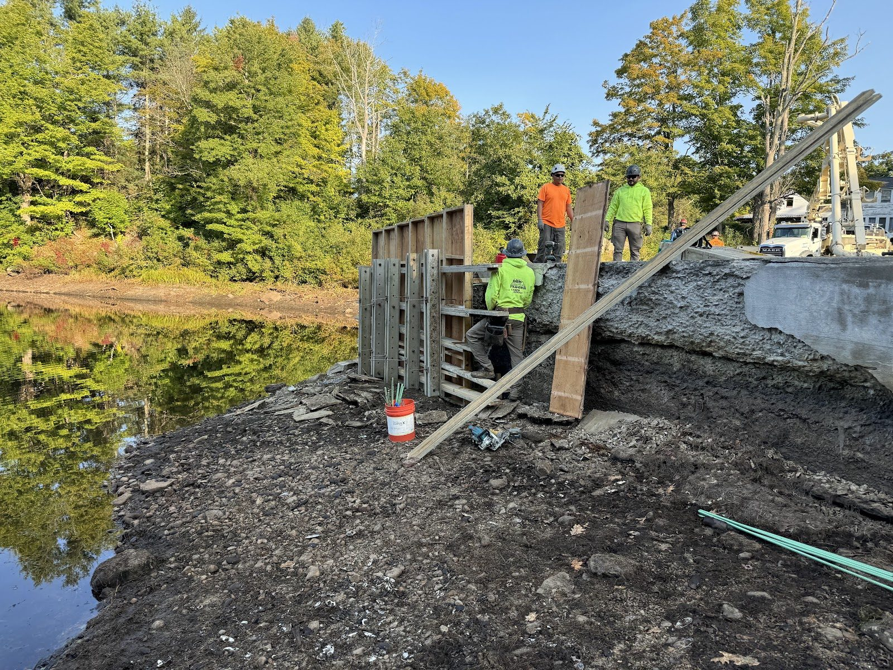
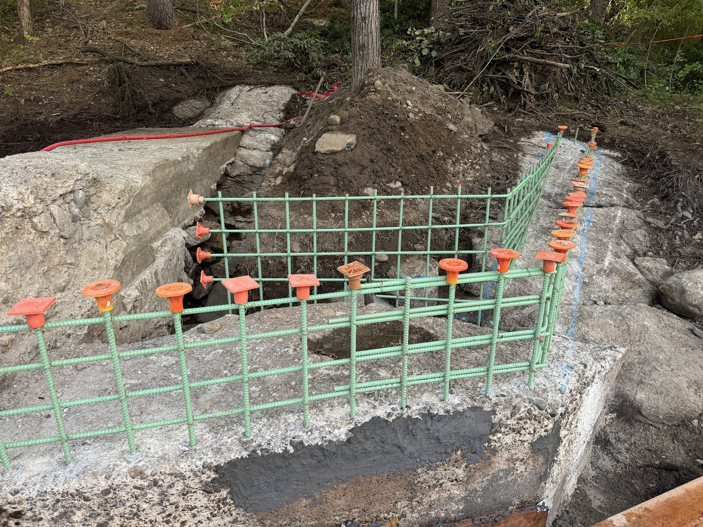
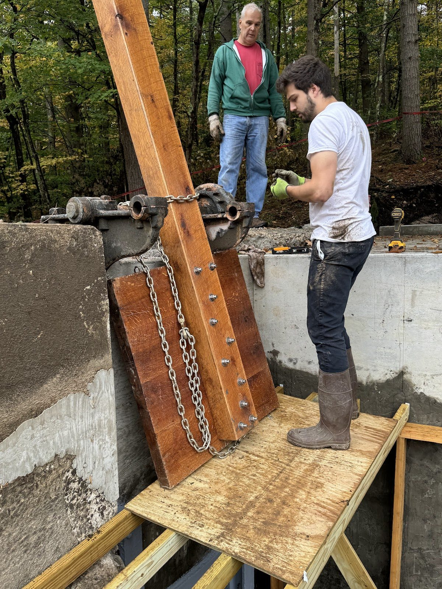
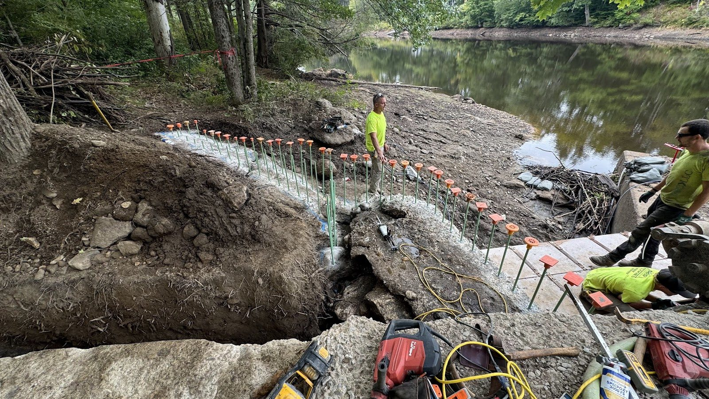
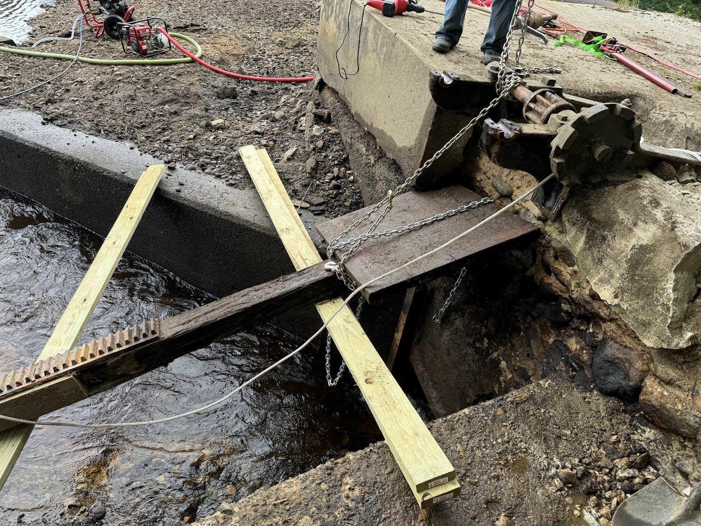
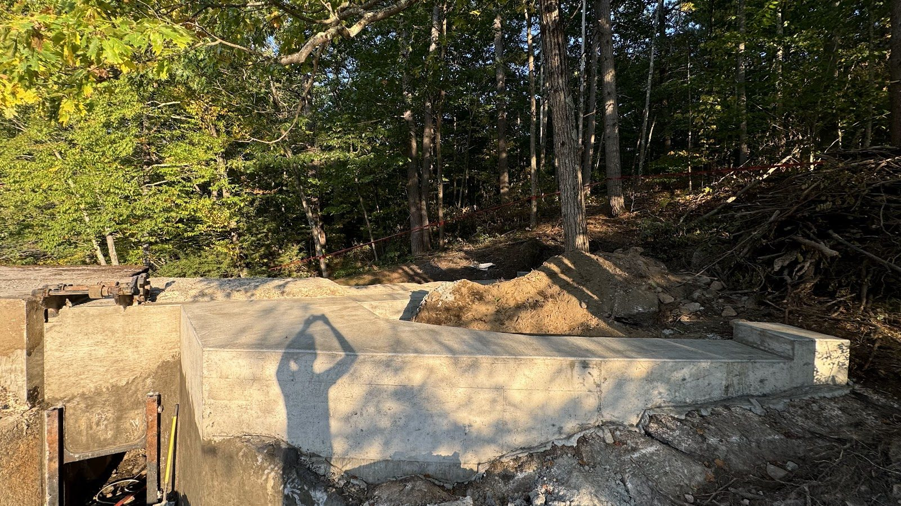
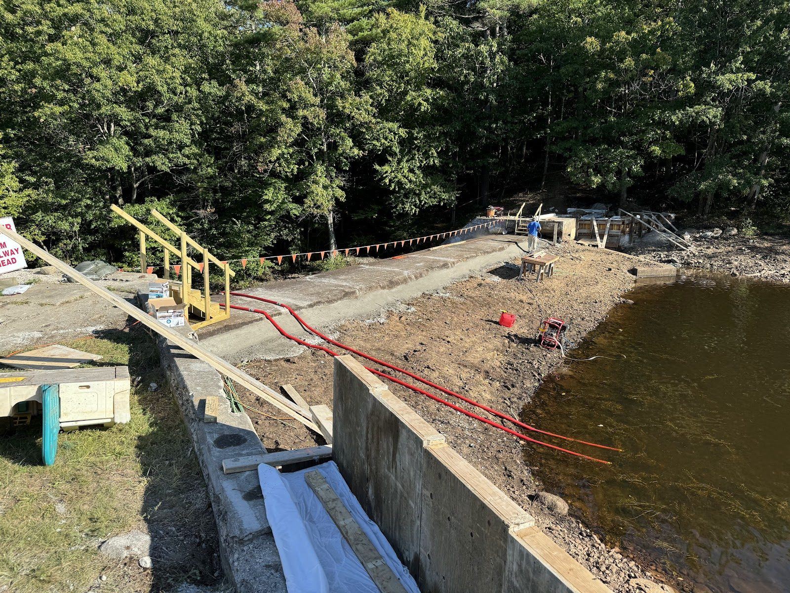
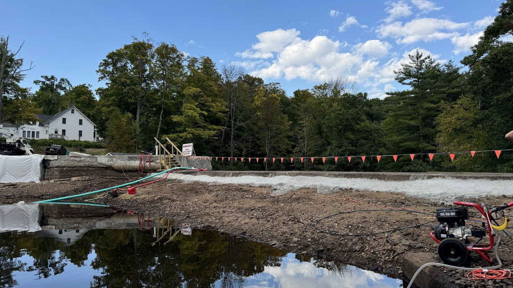

A New Abutment: Concrete Work as the Pond Returns

Six weeks of hard, wet, muddy work — and the leak is beaten.
With the pond drawn down, we got our first full look at the left abutment problem and confirmed the plan: rather than trying to chase and patch the leak paths through the old structure, we poured a completely new concrete abutment wall in front of the existing one. New reinforced concrete, tied into sound material, with the old abutment now serving as backup rather than front line.







The pours themselves made for some of the most satisfying days of the project so far. There is nothing quite like watching concrete flow into forms at the base of a dam you're bringing back to life — knowing that what you're placing will still be doing its job long after everyone on site is gone.
The drawdown officially ended on September 10th and the pond began refilling. We kept pouring on the upper sections even as the water came back, finishing the last work in mid-September just ahead of the rising waterline.
Waterloom Pond is filling back to its normal level this fall, now held back by a dam that's structurally better off than it has been in decades. The abutment repair was the most urgent item on the civil works list, and it's done.
Next up: the other half of this project — the machinery. We've been quietly working on turbine selection all year, and we'll have exciting news on that front soon.